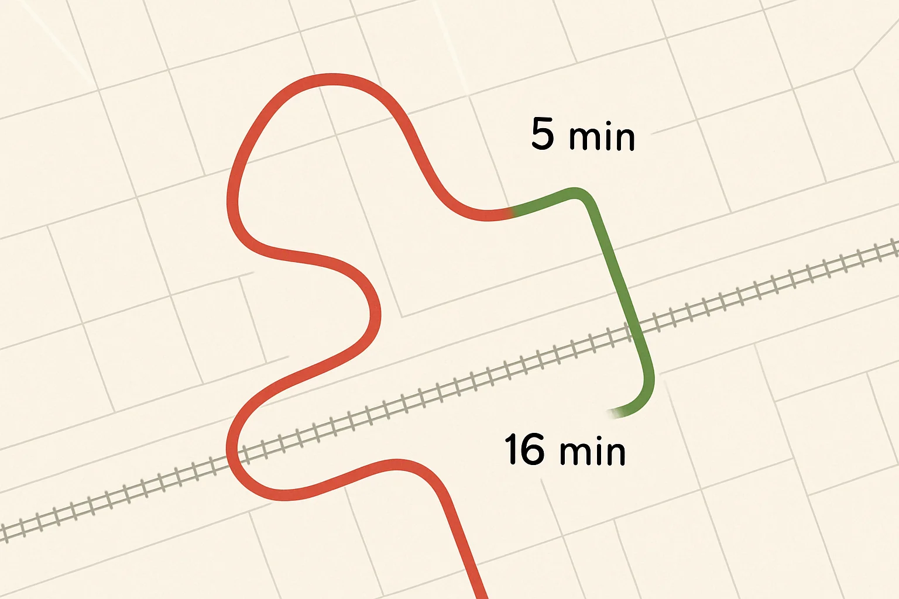
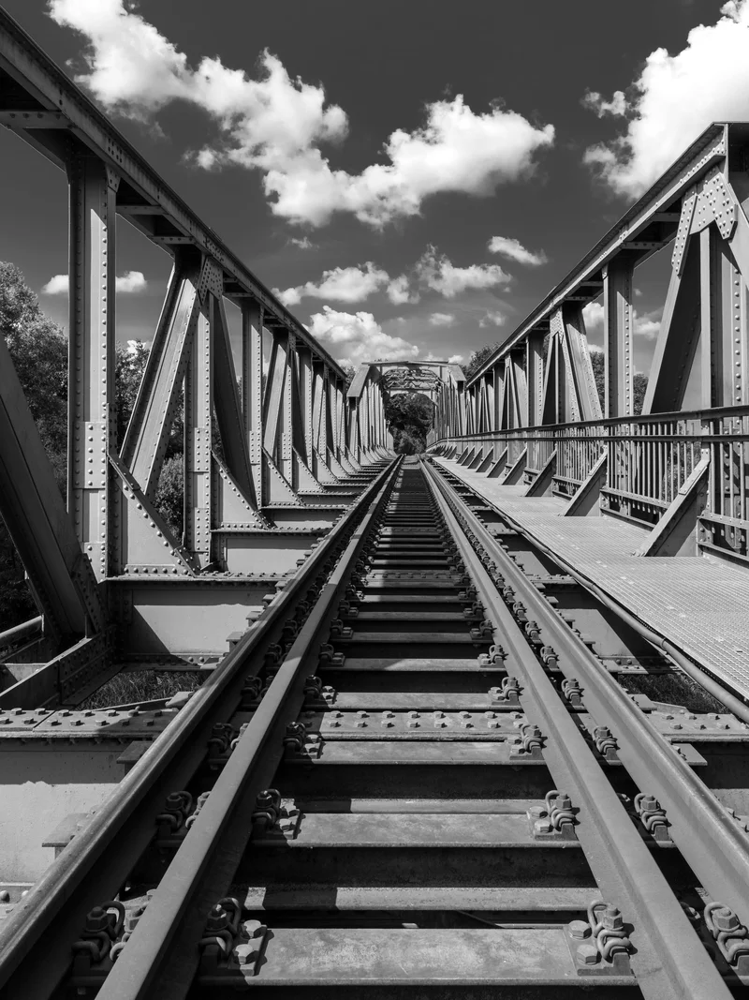
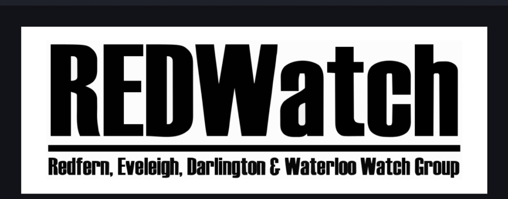

Bridging the Divide: The Eveleigh Bridge Project
For over a century, the railway corridor has served as the industrial heart of Sydney. Today, it stands as a physical barrier between neighbouring communities. This proposal supports a practical pedestrian and cycle link across Eveleigh.
The Great Divide
The rail corridor between Redfern and Erskineville creates a 3.5-kilometre barrier. The current detour is approximately 46 minutes on foot.
Neighbouring Areas
- North: Darlington, Newtown, Chippendale, Ultimo, Sydney University, Carriageworks.
- South: Alexandria, Erskineville, Waterloo, South Eveleigh, local schools.

Our Mission
Renewal plans reserve space for a pedestrian bridge. This proposal supports progressing that reserved corridor into a funded and deliverable project.

The Proposed Bridge
The proposal aligns closely with the location of the 1942 pedestrian bridge. It provides a direct east-west pedestrian and cycle connection.
Technical Snapshot
- Height: Approx. 9 metres above rail corridor
- Access: Ramps and stairs
- Design: Integrated with heritage character
Frequently Asked Questions
Why is a bridge needed?
Was a bridge previously proposed?
Campaign Supporters

